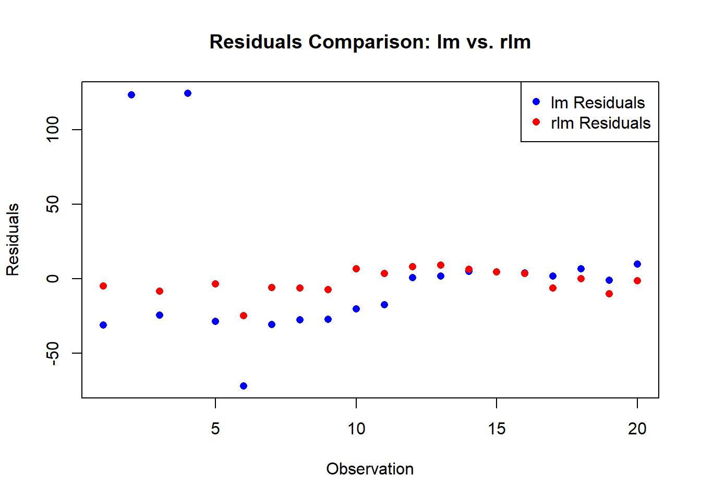

df <- data.frame(
x1 = c(1, 3, 3, 4, 4, 6, 6, 8, 9, 3, 11, 16, 16, 18, 19, 20, 23, 23, 24, 25),
x2 = c(7, 7, 4, 29, 13, 34, 17, 19, 20, 12, 25, 26, 26, 26, 27, 29, 30, 31, 31, 32),
y = c(17, 170, 19, 194, 24, 2, 25, 29, 30, 32, 44, 60, 61, 63, 63, 64, 61, 67, 59, 70)
)Introduction
If you’re familiar with linear regression in R, you’ve probably encountered the traditional lm() function. While this is a powerful tool, it might not be the best choice when dealing with outliers or influential observations. In such cases, robust regression comes to the rescue, and in R, the rlm() function from the MASS package is a valuable resource. In this blog post, we’ll delve into the step-by-step process of performing robust regression in R, using a dataset to illustrate the differences between the base R lm model and the robust rlm model.
The Dataset
Let’s start by loading the dataset into R:
This dataset contains three variables: x1, x2, and y. Now, let’s explore how to fit a linear regression model using both the traditional lm() function and the robust rlm() function.
Fitting a Model
Traditional Linear Regression (lm)
# Fit the lm model
lm_model <- lm(y ~ x1 + x2, data = df)
# Print the summary
summary(lm_model)
Call:
lm(formula = y ~ x1 + x2, data = df)
Residuals:
Min 1Q Median 3Q Max
-72.020 -27.290 -0.138 4.487 124.144
Coefficients:
Estimate Std. Error t value Pr(>|t|)
(Intercept) 41.106 29.940 1.373 0.188
x1 -0.605 2.066 -0.293 0.773
x2 1.075 1.857 0.579 0.570
Residual standard error: 49.42 on 17 degrees of freedom
Multiple R-squared: 0.02203, Adjusted R-squared: -0.09303
F-statistic: 0.1914 on 2 and 17 DF, p-value: 0.8275The lm() function provides a standard linear regression model. However, it assumes that the data follows a normal distribution and is sensitive to outliers. This sensitivity can lead to biased coefficient estimates.
Robust Linear Regression (rlm)
Now, let’s contrast this with the robust approach using the rlm() function:
# Load the MASS package
library(MASS)
# Fit the rlm model
robust_model <- rlm(y ~ x1 + x2, data = df)
# Print the summary
summary(robust_model)
Call: rlm(formula = y ~ x1 + x2, data = df)
Residuals:
Min 1Q Median 3Q Max
-24.9296 -6.1604 -0.5812 6.4648 170.4612
Coefficients:
Value Std. Error t value
(Intercept) 21.4109 5.9703 3.5862
x1 2.3077 0.4121 5.6004
x2 -0.2449 0.3703 -0.6615
Residual standard error: 9.369 on 17 degrees of freedomThe rlm() function, part of the MASS package, uses a robust M-estimation approach. It downplays the impact of outliers, making it more suitable for datasets with influential observations.
Understanding the Results
When you compare the summaries of the two models, you’ll notice differences in the coefficient estimates and standard errors. The robust model is less influenced by outliers, providing more reliable estimates in the presence of skewed or contaminated data.
View the Residuals
Let’s take a closer look at the residuals of the two models. First, we’ll extract the residuals from the lm() model:
lm_residuals <- residuals(lm_model)Next, we’ll extract the residuals from the rlm() model:
robust_residuals <- residuals(robust_model)Now, let’s plot the residuals from both models:
# Create a new plot
plot(
lm_residuals,
col = "blue",
pch = 16,
main = "Residuals Comparison: lm vs. rlm",
xlab = "Observation",
ylab = "Residuals"
)
# Add robust residuals to the plot
points(
robust_residuals,
col = "red",
pch = 16
)
# Add a legend
legend("topright", legend = c("lm Residuals", "rlm Residuals"), col = c("blue", "red"), pch = 16)
Try it on Your Own
Now that you’ve seen the contrast between the traditional lm() and the robust rlm() models, I encourage you to apply this knowledge to your own datasets. Experiment with different datasets, introduce outliers, and observe how the two models react. This hands-on approach will deepen your understanding of robust regression in R.
Remember, robust regression is a powerful tool when facing real-world data challenges. As you explore, don’t hesitate to tweak parameters, test assumptions, and refine your models. Happy coding, and may your regression analyses be robust and resilient!